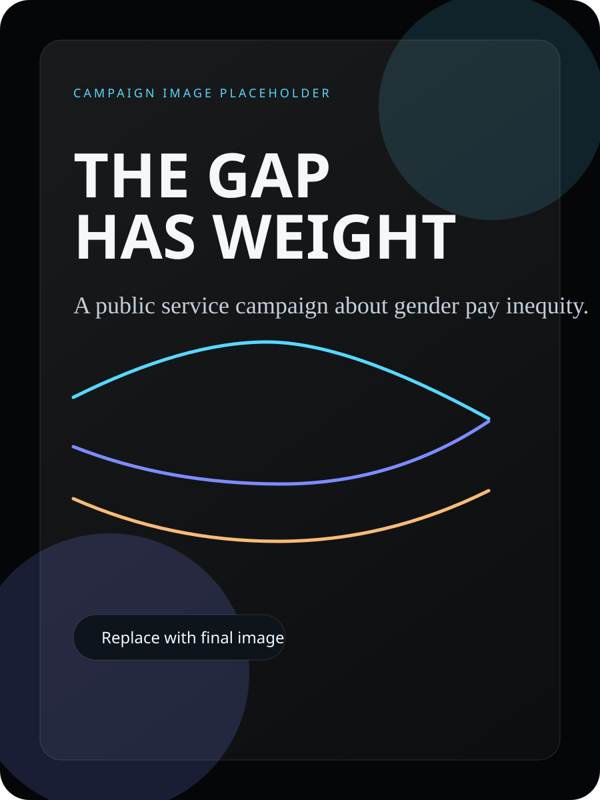
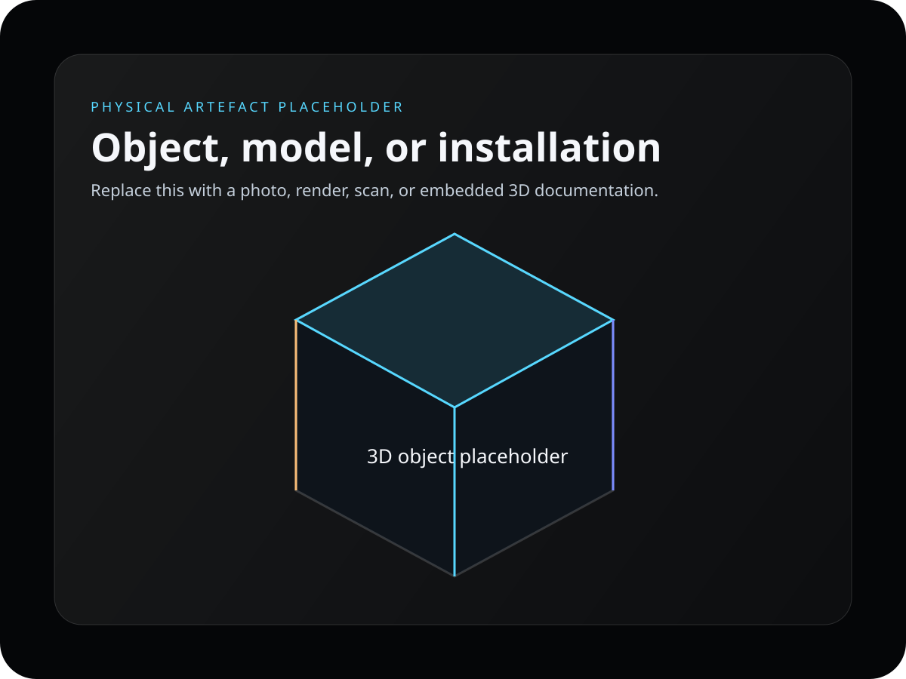

Audio piece
The short audio piece that carries the emotional case
An interview-led audio piece gives the emotional case a human voice people can stay with.
Artefacts
The podcast, infographic, image, and object each carry the same argument in a different form, grounded in the same evidence.
Audio piece
An interview-led audio piece gives the emotional case a human voice people can stay with.

Infographic
The infographic turns the key figures into a form that can be understood at a glance and carried into public discussion.

Campaign image
A still or poster gives the campaign a recognisable public face that can travel into classrooms, posters, and public circulation.

Physical artefact
An object or documented form gives the argument physical weight and makes it harder to dismiss as just another statistic.
Across the media pieces
Sources